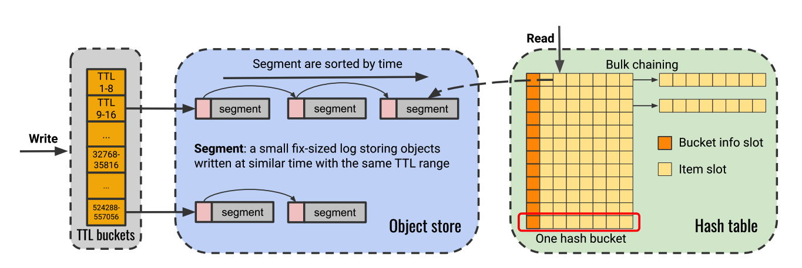

· 5 min read
Rethinking In-Memory Caching: A Deep Dive into Segcache
Modern web services, from social media feeds to e-commerce platforms, rely heavily on speed. A crucial component delivering this speed is the in-memory key-value cache, like Memcached or Redis. These caches store frequently accessed data in fast DRAM, reducing database load and response times. However, as web services scale and demands grow, traditional caching systems face significant challenges, especially when dealing with vast numbers of small data objects and managing their lifecycles efficiently.
Enter Segcache, a novel in-memory caching system presented in the NSDI '21 paper by Yang, Yue, and Rashmi. Segcache promises significant improvements in memory efficiency and scalability without sacrificing throughput, tackling several persistent problems in cache design head-on.
The Challenges with Traditional Caching
The paper highlights several inefficiencies in widely used caching systems:
- Metadata Overhead: Caches store metadata alongside the actual data. Systems like Memcached add over 50 bytes of metadata per object. When caching millions or billions of small objects (often just 10s to 1000s of bytes), this overhead consumes a substantial portion of expensive DRAM. Research aiming to improve cache eviction often increases this metadata further.
- TTL Expiration Inefficiency: Time-To-Live (TTL) is widely used for data freshness or implicit deletion. However, proactively removing expired objects is often inefficient. Methods like lazy deletion leave expired data occupying memory. Proactive methods like full cache scanning or random sampling can be resource-intensive or ineffective.
- Memory Fragmentation: Standard memory allocators (
malloc) can lead to external fragmentation, while slab allocators used by Memcached suffer from internal fragmentation and potential "slab calcification". Rebalancing slabs can be complex and even increase cache misses. - Scalability Bottlenecks: Traditional designs often struggle to scale linearly with increasing CPU cores due to locking contention in data structures like hash tables and LRU queues.
Segcache: A Segment-Structured Approach
Segcache introduces a redesign based on segments – small, fixed-size (e.g., 1MB by default) logs where objects are stored. Its design philosophy centers on being proactive, maximizing sharing, and performing bulk operations.
Key Innovations
Segcache introduces several novel features:
-
TTL-Indexed Segment Chains: Segcache organizes segments based on the approximate TTL of the
objects they contain using TTL buckets. Within each bucket, segments are linked into a chain, sorted by
creation time.
Benefit: This enables extremely efficient proactive expiration via bulk segment removal. -
Metadata Sharing ("Object Sharing Economy"): It drastically reduces per-object metadata to
just 5 bytes by sharing information (like creation time, TTL, reference counters, access
timestamps, CAS values) at the segment and hash bucket level.
Benefit: Dramatically improves memory efficiency, especially for small objects. -
Segment-Level Eviction & Merge: Eviction happens at the segment level. It uses a
merge-based approach, combining N segments into one new segment, selectively retaining the most important
objects (aiming to keep about 1/Nth of the bytes).
Benefit: Bulk operation is more efficient than object-level eviction. -
Approximate & Smoothed Frequency Counter (ASFC): A novel 1-byte counter ranks objects by
frequency/size for merge-based eviction. It's accurate for less popular items and smoothed to resist bursts.
Frequencies are reset during eviction.
Benefit: Provides an efficient, effective, and burst-resistant way to rank objects. -
Scalable Design: Uses bulk chaining in the hash table, minimal locking due to segment-level
operations, and thread-local active segments for writes.
Benefit: Achieves near-linear scalability with multiple CPU cores.
Write Operation (Adding or Updating an Object)
- Determine TTL Bucket: For each write (e.g.,
SET key value TTL), TTL is mapped to a predefined bucket using rounded-down values. - Find Target Segment: Segcache locates the tail segment of the TTL bucket chain, where data is still accepted.
- Append Object Data: Metadata, key, and value are appended sequentially to the segment. Older versions are invalidated implicitly.
- Update Hash Table: A new entry is added to the hash table with the segment location, a 12-bit tag, and a frequency counter.
- Handle Full Segment: When a segment fills, a new one is allocated. If unavailable, eviction is triggered.
See Figure 3 in the Segcache paper for a visual of the write path.
Read Operation (Retrieving an Object)
- Hash Table Lookup: The key is hashed to locate the bucket.
- Search Within Bucket: Scan for a matching 12-bit tag and verify with a full key check if needed.
- Retrieve Location: Extract Segment ID and offset.
- Read Object Data: Read full object (key, value, metadata) from the segment.
- Check Validity: Expired segments are already purged in background threads.
- Increment Frequency Counter: If a hit, increment the ASFC (rate-limited).
- Return Value: If found, return the value; else, it’s a cache miss.
Performance Highlights
Evaluated against systems like Memcached, PCache (Twitter's variant), r-LHD, and r-Hyperbolic using production traces from Twitter, Segcache showed impressive results:
- Memory Efficiency: Reduced miss ratios by up to 58% compared to the best alternative. Achieved target miss ratios with significantly less memory (up to 88% less than PCache, 56-64% less than s-Memcached/r-Hyperbolic).
- Throughput: Achieved high single-thread throughput, comparable to or better than optimized systems like PCache, and significantly faster (up to 2.5-4x) than others like s-Memcached or r-LHD.
- Scalability: Demonstrated near-linear scalability, achieving a 19.9x speedup on 24 threads (reaching >70 Million QPS), vastly outperforming Memcached's 3.4x speedup.
Visual Representation
Below is a conceptual diagram illustrating the high-level architecture of Segcache:

Why Segcache Matters
Segcache offers a compelling alternative to traditional in-memory caches. Its ability to significantly reduce memory footprint while maintaining or improving throughput and scaling effectively addresses major pain points in large-scale systems.
- Cost Savings: Reduced memory usage translates directly to lower hardware costs and energy consumption.
- Performance: Higher throughput and better scalability allow systems to handle more load with fewer resources.
- Efficiency: Timely expiration prevents wasted memory and improves cache effectiveness. The minimal metadata overhead is particularly beneficial for the common case of caching many small objects.
- Practicality: Implemented within Twitter's Pelikan framework and open-sourced, Segcache is designed for real-world production use.
Conclusion
Segcache demonstrates that by rethinking core cache design principles – specifically how metadata is handled and how expiration and eviction are performed – it's possible to build in-memory caches that are simultaneously more memory-efficient, faster, and more scalable. Its segment-structured design, focused on bulk operations and metadata sharing, offers a promising direction for future caching systems facing the demands of modern, data-intensive applications.